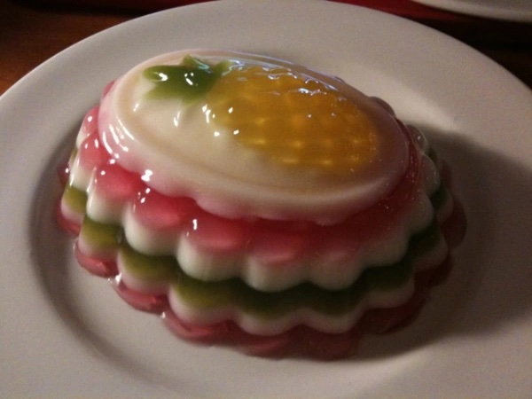
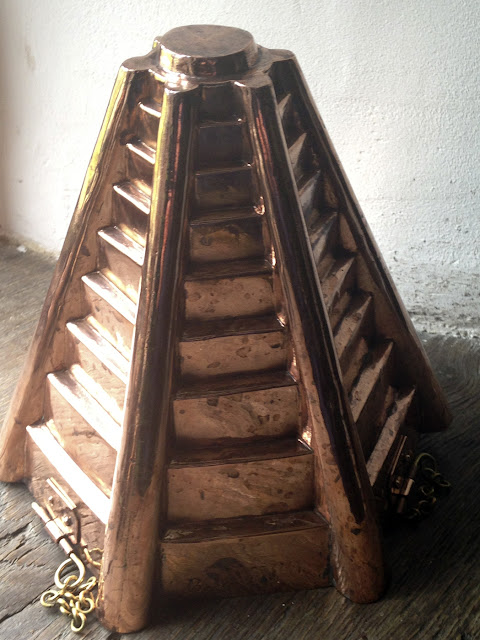
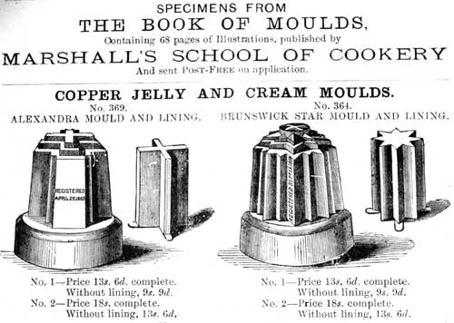
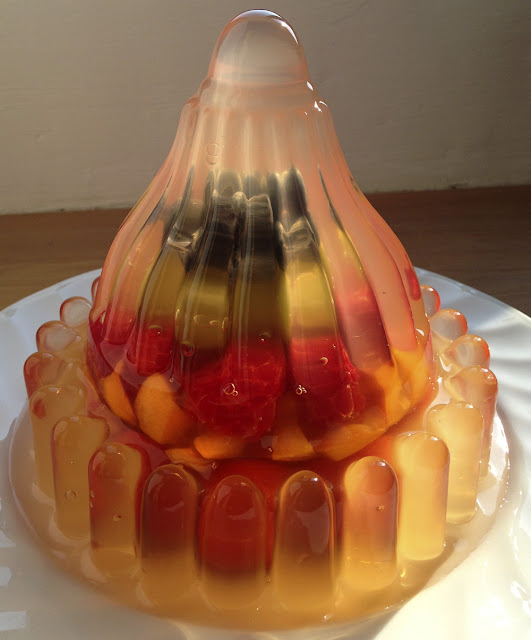
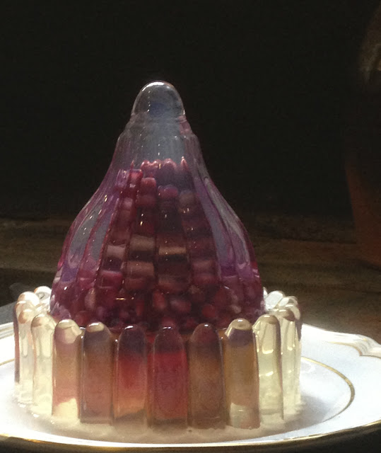
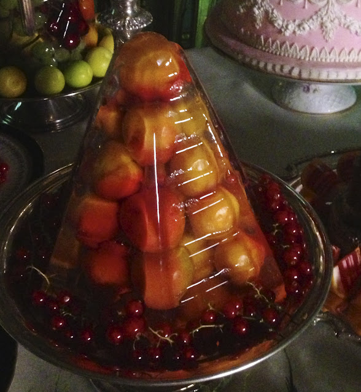
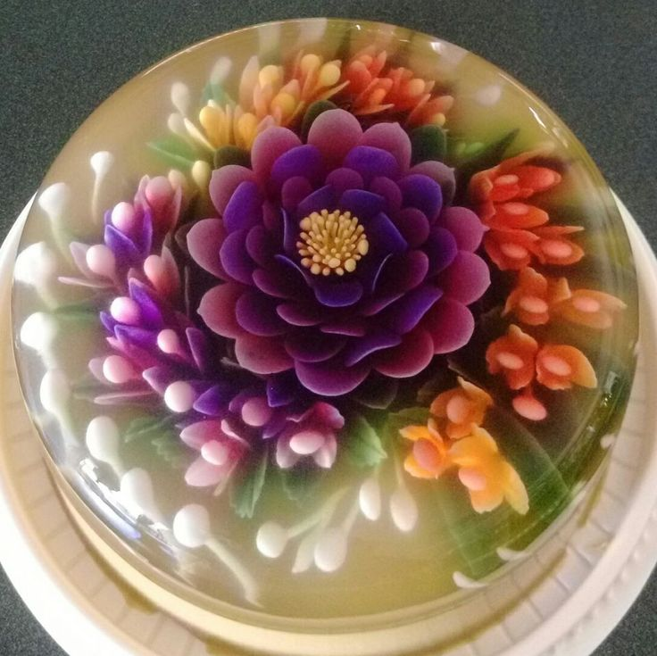
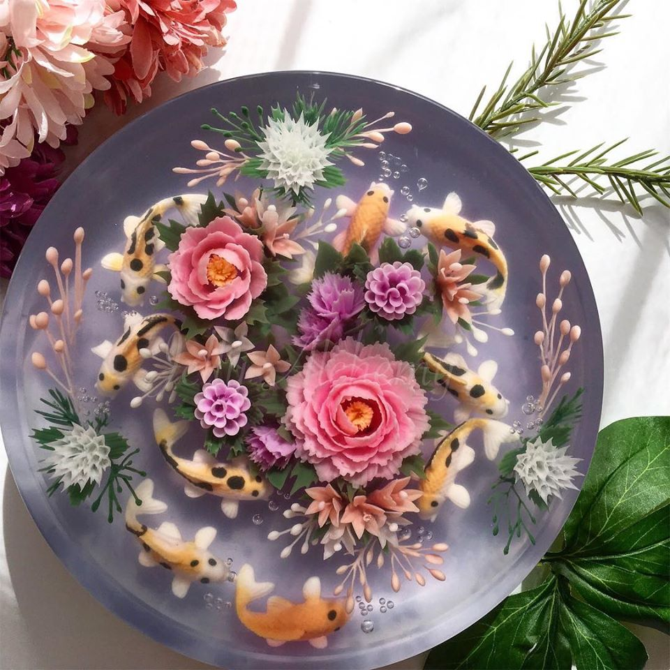
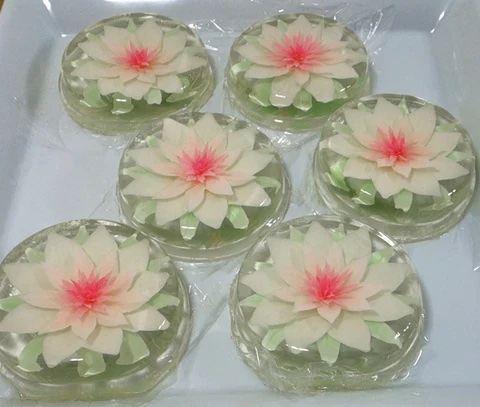

Gaining popularity amongst wealthy communities during the Industrial Revolution in Victorian Britain, elaborate gelatin desserts became a new medium of culinary expression for dessert chefs to exhibit style and sophistication for both themselves as well as their influential and rich clients. Although enough time has passed for gelatine to be reduced to an example of questionable 1950’s American cuisine and a not so well-loved diet food, Gelatin mould design and decoration continues to prove itself to be both a delicious as well as beautiful culinary art.
"During World War II, recipes touted Jell-O as a tool for jerry rigging wartime rations into presentable meals. In the ‘50s, this association stuck as convenience food titans used it as a vehicle to showcase ration-like products. That is how we got some of our most notorious gelatin dishes. “There was a time when General Foods owned the Jell-O, Hellmann’s Mayonnaise, and Libby Canned Fruit brands,” explains Ward. The recipes they promoted to advertise their products used ingredients from each of those brands." Atlas Obscura
Copper moulds were very popular amongst victorian chefs and gave them the ability to create towering gelatin structures.
 Here are some examples of copper mould gelatins:
  Although less popular than it used to be, decorative gellatin is still around today with more reasonable ingredients such as fruit and flowers.
  Here is a short video showing how you make a mushroom jello cake!